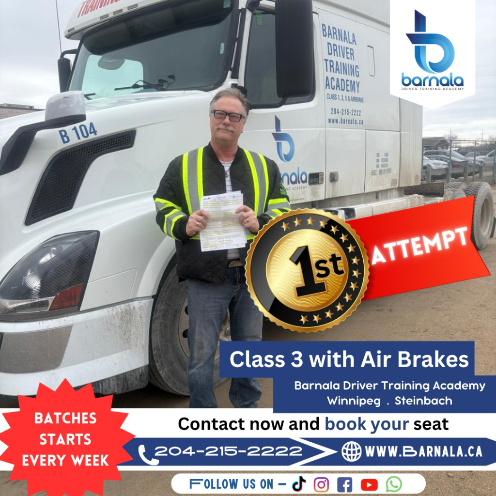
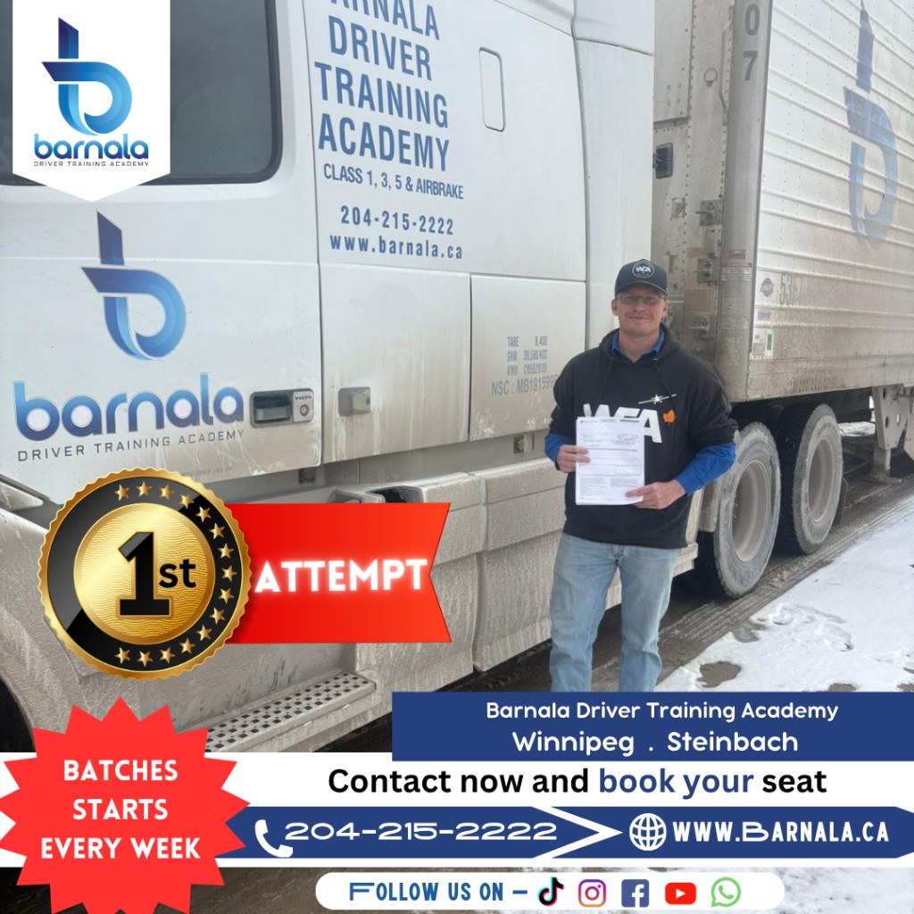

Professional Class 3 driver training in Winnipeg with experienced instructors, hands-on vehicle training, and complete road test preparation.
Our Class 3 Driver Training program combines classroom instruction with practical behind-the-wheel experience to prepare you for the Manitoba Class 3 knowledge and road tests.
Complete Class 3 Driver Training Program with practical instruction and test preparation.
Flexible one-on-one hourly practical training available outside the full program.
Learn directly from experienced instructors with personalized coaching and real driving experience.
Gain confidence through vehicle inspections, driving practice, defensive driving, and road test preparation.
Our Class 3 Driver Training program provides the learning resources, practical instruction, and support needed to prepare you for both the written and road tests.
Comprehensive learning resources and inspection study cards to help you prepare with confidence.
Gloves and high-visibility safety vest are provided during practical training sessions.
Hands-on air brake system instruction designed to prepare you for commercial vehicle operation.
Learn complete vehicle inspection procedures required before every commercial trip.
Prepare for both the written knowledge exam and the Manitoba Class 3 road test with instructor guidance.
Receive career guidance and support to help connect with employers after successfully completing your training.
Celebrating the achievements of our Class 3 graduates.


A Class 3 licence allows you to operate a wide range of commercial vehicles used throughout Manitoba. It is an excellent choice for individuals looking to build a career in construction, transportation, municipal services, and other essential industries.
A Class 3 licence opens the door to stable employment with private companies, municipalities, and utility providers. Skilled commercial drivers remain in high demand across Winnipeg and throughout Manitoba, making this licence an excellent investment in your future.
Our instructor-led Class 3 Driver Training combines classroom learning with practical behind-the-wheel experience to prepare you for both the Manitoba knowledge test and road exam.
Learn complete commercial vehicle inspections, safety checks, and proper walkaround procedures before every trip.
Develop confidence in reversing, parking, turning, and maneuvering large commercial vehicles safely.
Understand proper cargo securement techniques and legal safety requirements for commercial transportation.
Receive practical instruction on air brake operation, inspections, maintenance, and safe driving practices.
Gain experience driving through urban traffic, industrial zones, intersections, and commercial work environments.
Learn hazard awareness, emergency response techniques, traffic regulations, road signs, and safe decision-making.
Completing our Class 3 Driver Training program opens the door to a variety of in-demand careers across Manitoba. Many industries are actively looking for skilled commercial drivers to keep their operations moving safely and efficiently.
Transport ready-mix concrete to residential, commercial, and infrastructure construction projects throughout Manitoba.
Operate waste collection and recycling vehicles while supporting clean and sustainable communities.
Deliver building materials, equipment, and commercial goods safely across Winnipeg and surrounding areas.
Drive public works and utility vehicles used for road maintenance, water services, and infrastructure projects.
Operate commercial fleet vehicles that support construction companies, maintenance contractors, and service providers.
Skilled Class 3 drivers continue to be in demand across construction, transportation, municipal services, logistics, and many other industries throughout Manitoba.
We provide everything you need to prepare for both the Manitoba Class 3 knowledge test and the road exam. Our instructors guide you through every stage of the learning process to help you become a safe and confident commercial driver.
Access Manitoba Class 3 practice tests designed to strengthen your knowledge before the official exam.
Learn using detailed study materials and training manuals prepared for commercial driver success.
Experience realistic driving evaluations using commercial vehicles similar to those used during the official road test.
Receive one-on-one guidance from experienced instructors who focus on improving your confidence and driving skills.
Review road signs, traffic regulations, safety procedures, and commercial driving requirements with expert support.
Build the confidence and practical skills needed to successfully complete your Manitoba Class 3 road test.
We are committed to helping every student become a confident, skilled, and job-ready commercial driver. Our experienced instructors and practical training approach have helped many students successfully earn their Class 3 licence.
Learn from knowledgeable, MPI-certified instructors with years of commercial driving experience.
Train on local roads and routes commonly used during the Manitoba Class 3 road test.
Practice in well-maintained commercial vehicles equipped with modern safety features and air brake systems.
Receive comprehensive support for both the written knowledge exam and the practical road test.
Our structured training and personalized coaching help students build confidence and improve their chances of passing on the first attempt.
We provide guidance and job placement assistance to help graduates begin rewarding careers in commercial driving.
Find answers to the most common questions about our Class 3 Driver Training program in Winnipeg.
Our Class 3 program includes approximately 21 hours of focused training. Students receive vehicle familiarization, safety inspections, practical driving experience, and complete road test preparation.
Applicants must be at least 18 years old and hold a valid Manitoba Class 5 Full licence before applying for a Class 3 licence.
Yes. A Manitoba Class 3 licence is widely recognized across Canada, although some provinces may have additional licensing or employment requirements.
Yes. We work with industry employers in Winnipeg and help qualified graduates connect with career opportunities after completing the program.
Take the next step toward a rewarding career with Barnala Driver Training Academy. Our experienced instructors, practical training, and industry-focused approach will help you earn your Manitoba Class 3 licence with confidence.
Have questions about eligibility, course schedules, tuition, or the Class 3 licensing process? Our team is here to help you choose the right training program.